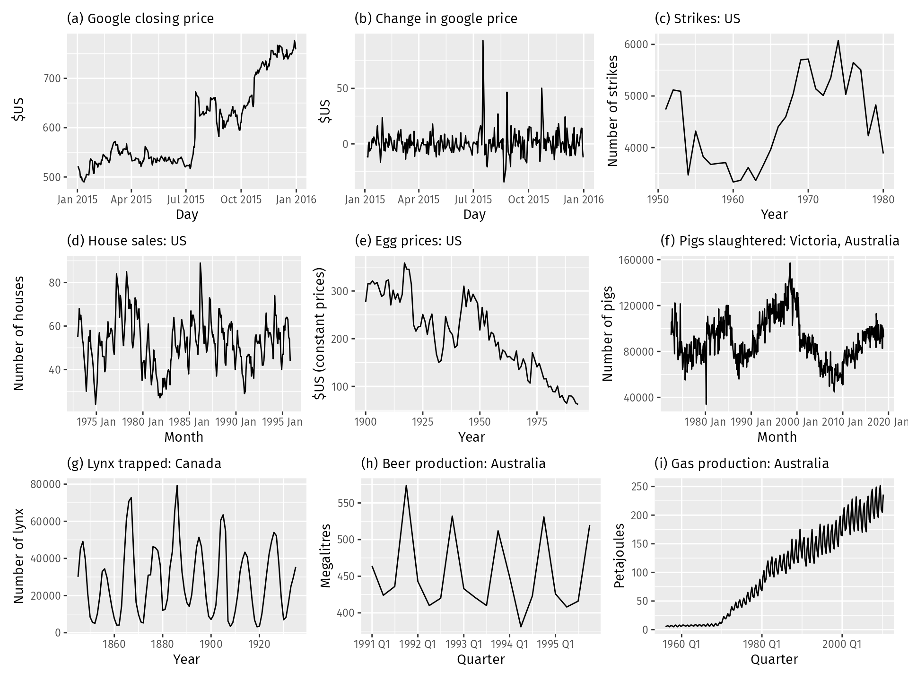

Forecasting with sktime#
OBJECTIVES
Basic forecasting workflow with
sktimelibraryExponential Smoothing models
Holt Winters Model
Autoregression
ARIMA Models
Starting from our last notebook, today we will cover additional forecasting models and further use sktime to implement time series forecasting models. We will use data that is already prepared as we discussed – datetime index sorted in time.
Grid Searching a Pipeline#
The example below demonstrates gridsearching elements of a pipeline. How does this work?
from sklearn.model_selection import GridSearchCV
from sklearn.preprocessing import OneHotEncoder, PolynomialFeatures
from sklearn.ensemble import RandomForestRegressor
from sklearn.datasets import fetch_openml
from sklearn.compose import make_column_transformer
from sklearn.pipeline import Pipeline
from sklearn import set_config
import pandas as pd
import numpy as np
import matplotlib.pyplot as plt
import warnings
warnings.filterwarnings('ignore')
set_config(transform_output='pandas')
survey = fetch_openml(data_id=534, as_frame=True)
X = survey.data
y = survey.target
X.head()
| EDUCATION | SOUTH | SEX | EXPERIENCE | UNION | AGE | RACE | OCCUPATION | SECTOR | MARR | |
|---|---|---|---|---|---|---|---|---|---|---|
| 0 | 8 | no | female | 21 | not_member | 35 | Hispanic | Other | Manufacturing | Married |
| 1 | 9 | no | female | 42 | not_member | 57 | White | Other | Manufacturing | Married |
| 2 | 12 | no | male | 1 | not_member | 19 | White | Other | Manufacturing | Unmarried |
| 3 | 12 | no | male | 4 | not_member | 22 | White | Other | Other | Unmarried |
| 4 | 12 | no | male | 17 | not_member | 35 | White | Other | Other | Married |
cat_cols = X.select_dtypes('category').columns.tolist()
ohe = OneHotEncoder(sparse_output=False, handle_unknown = 'ignore')
transformer = make_column_transformer((ohe, cat_cols), remainder = 'passthrough',
verbose_feature_names_out=False)
forest = RandomForestRegressor()
pipe = Pipeline([('transformer', transformer), ('model', forest)])
#what is happening here?
params = {'model__n_estimators': [10, 100],
'model__max_depth': [1, 2, 3, None],
'transformer__remainder': ['passthrough', PolynomialFeatures(interaction_only=True)]}
grid = GridSearchCV(pipe, param_grid=params)
grid.fit(X, y)
GridSearchCV(estimator=Pipeline(steps=[('transformer',
ColumnTransformer(remainder='passthrough',
transformers=[('onehotencoder',
OneHotEncoder(handle_unknown='ignore',
sparse_output=False),
['SOUTH',
'SEX',
'UNION',
'RACE',
'OCCUPATION',
'SECTOR',
'MARR'])],
verbose_feature_names_out=False)),
('model', RandomForestRegressor())]),
param_grid={'model__max_depth': [1, 2, 3, None],
'model__n_estimators': [10, 100],
'transformer__remainder': ['passthrough',
PolynomialFeatures(interaction_only=True)]})In a Jupyter environment, please rerun this cell to show the HTML representation or trust the notebook. On GitHub, the HTML representation is unable to render, please try loading this page with nbviewer.org.
GridSearchCV(estimator=Pipeline(steps=[('transformer',
ColumnTransformer(remainder='passthrough',
transformers=[('onehotencoder',
OneHotEncoder(handle_unknown='ignore',
sparse_output=False),
['SOUTH',
'SEX',
'UNION',
'RACE',
'OCCUPATION',
'SECTOR',
'MARR'])],
verbose_feature_names_out=False)),
('model', RandomForestRegressor())]),
param_grid={'model__max_depth': [1, 2, 3, None],
'model__n_estimators': [10, 100],
'transformer__remainder': ['passthrough',
PolynomialFeatures(interaction_only=True)]})Pipeline(steps=[('transformer',
ColumnTransformer(remainder=PolynomialFeatures(interaction_only=True),
transformers=[('onehotencoder',
OneHotEncoder(handle_unknown='ignore',
sparse_output=False),
['SOUTH', 'SEX', 'UNION',
'RACE', 'OCCUPATION',
'SECTOR', 'MARR'])],
verbose_feature_names_out=False)),
('model', RandomForestRegressor(max_depth=3, n_estimators=10))])ColumnTransformer(remainder=PolynomialFeatures(interaction_only=True),
transformers=[('onehotencoder',
OneHotEncoder(handle_unknown='ignore',
sparse_output=False),
['SOUTH', 'SEX', 'UNION', 'RACE', 'OCCUPATION',
'SECTOR', 'MARR'])],
verbose_feature_names_out=False)['SOUTH', 'SEX', 'UNION', 'RACE', 'OCCUPATION', 'SECTOR', 'MARR']
OneHotEncoder(handle_unknown='ignore', sparse_output=False)
['EDUCATION', 'EXPERIENCE', 'AGE']
PolynomialFeatures(interaction_only=True)
RandomForestRegressor(max_depth=3, n_estimators=10)
grid.best_params_
{'model__max_depth': 3,
'model__n_estimators': 10,
'transformer__remainder': PolynomialFeatures(interaction_only=True)}
grid.score(X, y)
0.3696322816745866
Add a search over the max_depth parameter of the RandomForestRegressor where you consider trees with:
max_depth = [1, 2, 3, None]
Feature Importances
The RandomForestRegressor has .feature_importances_ determined by the use of a feature in splitting. Below these are displayed as a DataFrame.
steps = grid.best_estimator_.named_steps
pd.DataFrame(steps['model'].feature_importances_,
index = steps['transformer'].get_feature_names_out(),
columns = ['feature importance'])\
.sort_values(by = 'feature importance',
ascending = False)
| feature importance | |
|---|---|
| EDUCATION | 0.437090 |
| EDUCATION AGE | 0.170072 |
| EDUCATION EXPERIENCE | 0.071783 |
| UNION_not_member | 0.051606 |
| SEX_male | 0.049749 |
| OCCUPATION_Service | 0.044131 |
| OCCUPATION_Management | 0.042462 |
| SEX_female | 0.040601 |
| EXPERIENCE AGE | 0.024461 |
| SOUTH_no | 0.022328 |
| OCCUPATION_Clerical | 0.012373 |
| AGE | 0.011903 |
| RACE_White | 0.005454 |
| UNION_member | 0.005119 |
| EXPERIENCE | 0.004870 |
| SECTOR_Manufacturing | 0.004582 |
| SECTOR_Construction | 0.001415 |
| 1 | 0.000000 |
| RACE_Hispanic | 0.000000 |
| RACE_Other | 0.000000 |
| MARR_Married | 0.000000 |
| MARR_Unmarried | 0.000000 |
| OCCUPATION_Other | 0.000000 |
| SECTOR_Other | 0.000000 |
| SOUTH_yes | 0.000000 |
| OCCUPATION_Professional | 0.000000 |
| OCCUPATION_Sales | 0.000000 |
sktime#
#!pip install sktime[all_extras]
import sktime as skt
from sktime.datasets import load_lynx
from sktime.utils.plotting import plot_correlations, plot_series
Visualizing Time Series#
Initially, it is important to consider a plot of the series. Here, we are looking at the very least to see if the series has a trend or some kind of seasonality. We will typically also look to the autocorrelation and partial autocorrelation plot.
plot_seriesplot_correlations
lynx = load_lynx()
plot_series(lynx);
---------------------------------------------------------------------------
ImportError Traceback (most recent call last)
Cell In[21], line 1
----> 1 plot_series(lynx);
File /Library/Frameworks/Python.framework/Versions/3.12/lib/python3.12/site-packages/sktime/utils/plotting.py:90, in plot_series(labels, markers, colors, title, x_label, y_label, ax, pred_interval, *series)
87 check_y(y)
89 l_series = list(series)
---> 90 l_series = [convert_to(y, "pd.Series", "Series") for y in l_series]
91 for i in range(len(l_series)):
92 if isinstance(list(series)[i], pd.DataFrame):
File /Library/Frameworks/Python.framework/Versions/3.12/lib/python3.12/site-packages/sktime/datatypes/_convert.py:265, in convert_to(obj, to_type, as_scitype, store, store_behaviour, return_to_mtype)
262 as_scitype = mtype_to_scitype(to_type)
264 # now further narrow down as_scitype by inference from the obj
--> 265 from_type = infer_mtype(obj=obj, as_scitype=as_scitype)
266 as_scitype = mtype_to_scitype(from_type)
268 converted_obj = convert(
269 obj=obj,
270 from_type=from_type,
(...)
275 return_to_mtype=return_to_mtype,
276 )
File /Library/Frameworks/Python.framework/Versions/3.12/lib/python3.12/site-packages/sktime/datatypes/_check.py:359, in mtype(obj, as_scitype, exclude_mtypes)
357 as_scitype = _coerce_list_of_str(as_scitype, var_name="as_scitype")
358 for scitype in as_scitype:
--> 359 _check_scitype_valid(scitype)
361 check_dict = get_check_dict()
362 m_plus_scitypes = [
363 (x[0], x[1]) for x in check_dict.keys() if x[0] not in exclude_mtypes
364 ]
File /Library/Frameworks/Python.framework/Versions/3.12/lib/python3.12/site-packages/sktime/datatypes/_check.py:92, in _check_scitype_valid(scitype)
90 def _check_scitype_valid(scitype: str = None):
91 """Check validity of scitype."""
---> 92 check_dict = get_check_dict()
93 valid_scitypes = list({x[1] for x in check_dict.keys()})
95 if not isinstance(scitype, str):
File /Library/Frameworks/Python.framework/Versions/3.12/lib/python3.12/site-packages/sktime/datatypes/_check.py:52, in get_check_dict(soft_deps)
47 if soft_deps not in ["present", "all"]:
48 raise ValueError(
49 "Error in get_check_dict, soft_deps argument must be 'present' or 'all', "
50 f"found {soft_deps}"
51 )
---> 52 check_dict = generate_check_dict(soft_deps=soft_deps)
53 return check_dict.copy()
File /Library/Frameworks/Python.framework/Versions/3.12/lib/python3.12/site-packages/sktime/datatypes/_check.py:59, in generate_check_dict(soft_deps)
56 @lru_cache(maxsize=1)
57 def generate_check_dict(soft_deps="present"):
58 """Generate check_dict using lookup."""
---> 59 from skbase.utils.dependencies import _check_estimator_deps
61 from sktime.utils.retrieval import _all_classes
63 classes = _all_classes("sktime.datatypes")
ImportError: cannot import name '_check_estimator_deps' from 'skbase.utils.dependencies' (/Library/Frameworks/Python.framework/Versions/3.12/lib/python3.12/site-packages/skbase/utils/dependencies/__init__.py)
plot_correlations(lynx);

Forecasting with sktime#
from sktime.datasets import load_airline
airline = load_airline()
_, ax = plot_correlations(airline, suptitle = 'Airline Passengers')
ax[0].grid()

from sktime.split import temporal_train_test_split
X_train, X_test = temporal_train_test_split(airline)
plot_series(X_train, X_test, labels = ['train', 'test'], title = 'Train Test Split')
plt.grid();

Baseline Model#
The NaiveForecaster provides multiple strategies for baseline predicitions. What does stragey = 'drift' do? Plot the predictions along with the train and test data adding appropriate labels.
from sktime.forecasting.naive import NaiveForecaster
#number of time steps to forecast
fh = np.arange(1, len(X_test)+1)
fh
array([ 1, 2, 3, 4, 5, 6, 7, 8, 9, 10, 11, 12, 13, 14, 15, 16, 17,
18, 19, 20, 21, 22, 23, 24, 25, 26, 27, 28, 29, 30, 31, 32, 33, 34,
35, 36])
#instantiate
forecaster = NaiveForecaster(strategy = 'drift')
#fit model
forecaster.fit(X_train)
#predict for horizon
yhat = forecaster.predict(fh)
#plot the predictions using plot_series
plot_series(X_train, X_test, yhat, labels = ['train', 'test', 'naive model'])
(<Figure size 1600x400 with 1 Axes>,
<Axes: ylabel='Number of airline passengers'>)
Evaluating predictions#
sktime implements many evaluation metrics. Below, the MeanAbsolutePercentageError class is instantiated and used to evaluated the naive baseline. Per usual, lower is better.
from sktime.performance_metrics.forecasting import MeanAbsolutePercentageError
mae = MeanAbsolutePercentageError()
mae(X_test, yhat)
0.1299046419013891
Exponential Smoothing#
The weighted moving average model – very basic and simple; predicts the same value over and over.
from sktime.forecasting.exp_smoothing import ExponentialSmoothing
#instantiate
exp = ExponentialSmoothing()
#fit the model
exp.fit(X_train)
ExponentialSmoothing()Please rerun this cell to show the HTML repr or trust the notebook.
ExponentialSmoothing()
#predict
exp_preds = exp.predict(fh)
#evaluate
mae(X_test, exp_preds)
0.19886712021864697
#plot the series
plot_series(X_train, X_test, yhat, exp_preds, labels = ['train', 'test', 'naive', 'exp smoothing'])
(<Figure size 1600x400 with 1 Axes>,
<Axes: ylabel='Number of airline passengers'>)
Holt Winters Model#
Triple Exponential Smoothing where trend and seasonality are considered. Below, a holt winters model is implemented.
trend: always additive
seasonality: additive if same each season, multiplicative if growing
sp: timesteps in a season
QUESTION: What kind of seasonality should we use here – additive or multiplicative? Why?
#what kind of seasonality?
plot_series(airline);
hw = ExponentialSmoothing(trend = 'add', seasonal='mul', sp = 12)
hw.fit(X_train)
hw_preds = hw.predict(fh)
plot_series(X_train, X_test, hw_preds,
labels = ['train', 'test', 'holt winters'],
)
plt.grid();
mae(X_test, hw_preds)
0.05056484561299068
Stationarity and Differencing#
Regression models in time series will also have assumptions about the data, namely that the data we model is stationary. Stationary data has constant mean and variance – thus trends and seasonality are not a part of stationary time series.
plot_correlations(X_train);

QUESTION: Which of the time series pictured below are stationary?

Differencing the Data#
One way to remove the trend is to difference the data. Compare the resulting autocorrelation plot to the undifferenced data.
X_train.diff(1).head()
1949-01 NaN
1949-02 6.0
1949-03 14.0
1949-04 -3.0
1949-05 -8.0
Freq: M, Name: Number of airline passengers, dtype: float64
plot_correlations(X_train.diff(1).dropna());

#seasonal differencing to try to remove seasonality -- t and t-12
plot_correlations(X_train.diff(1).diff(12).dropna());
AutoRegression#
Similar to regression however the regression is on previous time steps or “lags”.
from sktime.forecasting.auto_reg import AutoREG
ar = AutoREG(lags = 12)
ar.fit(X_train)
ar_preds = ar.predict(fh)
plot_series(X_train, X_test, hw_preds, ar_preds,
labels = ['train', 'test', 'holt winters', 'auto regressive'],
)
plt.grid();
ar.get_fitted_params()
{'aic': 757.542243633855,
'aicc': 762.7274288190403,
'bic': 793.4431183144047,
'hqic': 772.0539637923447,
'const': 2.9873776849433797,
'Number of airline passengers.L1': 0.44024802821861964,
'Number of airline passengers.L2': -0.24712930495045438,
'Number of airline passengers.L3': 0.19596577672853754,
'Number of airline passengers.L4': -0.23300070381218363,
'Number of airline passengers.L5': 0.2307885835405692,
'Number of airline passengers.L6': -0.17243176175515784,
'Number of airline passengers.L7': 0.14303113614100504,
'Number of airline passengers.L8': -0.22605487868090735,
'Number of airline passengers.L9': 0.22902051756885133,
'Number of airline passengers.L10': -0.2242183998876448,
'Number of airline passengers.L11': 0.3190313152823776,
'Number of airline passengers.L12': 0.6340912733182218}
mae(X_test, ar_preds)
0.10913989054790951
PROBLEM: Adjusting for lags. Consider an autoregressive model that uses the 12 previous time steps to forecast. Is this model better? Plot the results.
ARIMA models#
AR: Autoregressive component as aboveMA: Moving average of errors
ARIMA: Autoregressive integrated moving average
\(p\): order of autoregressive component
\(q\): order of moving average component
\(d\): order of differences of series
from sktime.forecasting.arima import ARIMA
arima = ARIMA(order = (1, 1, 1))
arima.fit(X_train)
ARIMA(order=(1, 1, 1))Please rerun this cell to show the HTML repr or trust the notebook.
ARIMA(order=(1, 1, 1))
arima_preds = arima.predict(fh)
plot_series(X_train, X_test, arima_preds, labels = ['train', 'test', 'arima'])
(<Figure size 1600x400 with 1 Axes>,
<Axes: ylabel='Number of airline passengers'>)
PROBLEM
Try to fit an AutoARIMA model (automatically selects \(p,q,d\)). How does this model perform?
from sktime.forecasting.arima import AutoARIMA
#instantiate
auto_ar = AutoARIMA()
#fit
auto_ar.fit(X_train)
#predict
auto_preds = auto_ar.predict(fh)
#print mape
print(mae(X_test, auto_preds))
#plot predictions
plot_series(X_train, X_test, auto_preds, labels = ['train', 'test', 'autoarima'])
0.11654169318875225
(<Figure size 1600x400 with 1 Axes>,
<Axes: ylabel='Number of airline passengers'>)
auto_ar.get_fitted_params()
{'intercept': 0.6708145063428641,
'ar.L1': 1.640537387976563,
'ar.L2': -0.9086368984722021,
'ma.L1': -1.8337763227623853,
'ma.L2': 0.9289381223972486,
'sigma2': 393.3177514621617,
'order': (2, 1, 2),
'seasonal_order': (0, 0, 0, 0),
'aic': 959.2179634640711,
'aicc': 960.0579634640711,
'bic': 975.2549364708425,
'hqic': 965.7191390772085}
Example: Shampoo Sales#
from sktime.datasets import load_shampoo_sales
shampoo = load_shampoo_sales()
plot_series(shampoo, labels = ['shampoo sales']);
PROBLEM
Split the data into train and test sets to build a Holt Winters model and AutoARIMA model. Compare performance on the test data and plot the resulting predictions using plot_series with appropriate labels.
X_train, X_test = temporal_train_test_split(shampoo)
fh = np.arange(len(X_test))
hw = ExponentialSmoothing(trend = 'add', seasonal='mul', sp = 6)
hw.fit(X_train)
ExponentialSmoothing(seasonal='mul', sp=6, trend='add')Please rerun this cell to show the HTML repr or trust the notebook.
ExponentialSmoothing(seasonal='mul', sp=6, trend='add')
hw_preds = hw.predict(fh)
auto = AutoARIMA()
auto.fit(X_train)
auto_preds = auto.predict(fh)
plot_series(X_train, X_test, auto_preds, hw_preds, labels = ['train', 'test', 'arima', 'holt winters'])
(<Figure size 1600x400 with 1 Axes>, <Axes: ylabel='Number of shampoo sales'>)
Readings or Watchings: